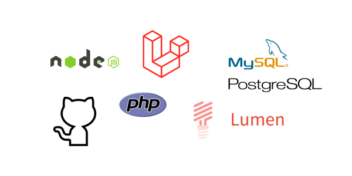

Tecnologías Backend
Con una sólida base en tecnologías de backend como Node.js, PHP, y Laravel, complementada con una profunda comprensión de bases de datos como MySQL y PostgreSQL, me especializo en construir la estructura robusta y eficiente detrás de cada aplicación web. Mi experiencia se extiende a la implementación de servicios REST y SOAP, garantizando soluciones seguras y escalables

Tecnologías Frontend
Mi pasión por el diseño y la experiencia del usuario cobra vida a través de mis habilidades en HTML, CSS, JavaScript y frameworks como Angular y Vue.js. Utilizo herramientas como Bootstrap y Elementor para crear interfaces atractivas y receptivas, asegurando que cada proyecto destaque por su accesibilidad y estética refinada.